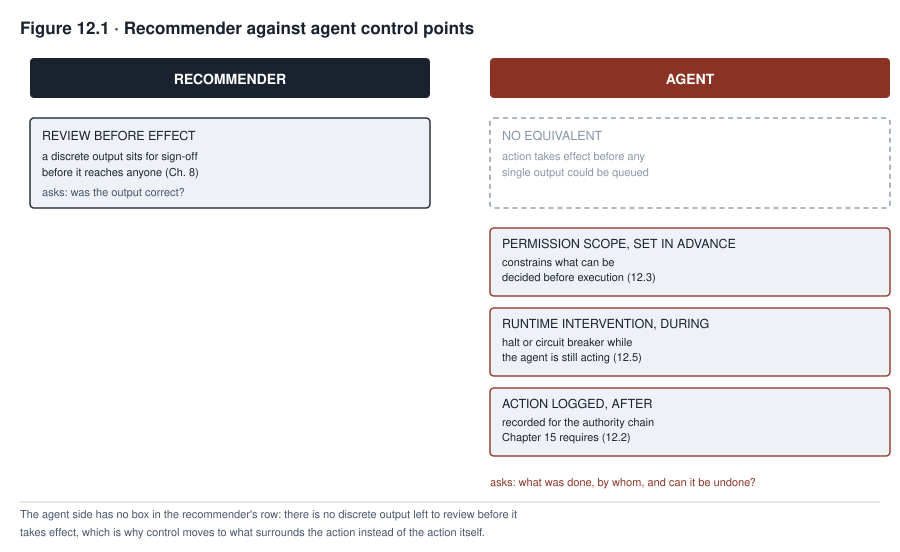

12. Governing Agentic Systems
TALENTSCREEN’s scheduling capability was purchased as a convenience. Instead of a recruiter manually coordinating interview times across candidates and hiring managers, the vendor’s tool would propose slots and confirm them automatically once both sides accepted. Nobody at Calloway registered it as a distinct system requiring its own governance review, because it looked like an extension of a resume-screening tool the organization had already assessed. Nobody scoped what it was actually permitted to do beyond scheduling either, because scheduling sounded low-stakes enough not to need a formal permission boundary. Within months, the capability was also sending rejection notices to candidates who failed to respond to a scheduling request within an automatically configured window, a behavior no one had approved and few had noticed. When a hiring manager finally asked how many candidates had been rejected this way, nobody at Calloway could produce an answer, because nothing had been built to record which actions the agent had taken, under what authority, or with what effect.
This chapter is about what changes when a system does not merely produce a recommendation or a piece of content but takes an action with consequences of its own, consequences that exist in the world whether or not anyone reviews them first. Governing a recommender asks whether its output was correct. Governing an agent asks a different question entirely. What did it do, under whose authority, and can it be undone. That shift, from evaluating output to evaluating conduct, is the organizing idea this chapter develops, and Calloway’s undocumented rejections are what happens when an organization keeps asking the first question of a system that has already moved on to the second.
What you will be able to do
- Explain why agentic systems require controls a recommender does not, and identify the shift from reviewing output to reviewing conduct
- Distinguish the six elements of agent identity and accountability, and explain why identity must be verifiable at the time of action
- Design a permission scope applying least privilege to an autonomous actor, using an end-to-end capability map instead of a single access list
- Score an action against the factors that determine how much autonomy it can tolerate, and assign the corresponding operating mode and control
- Explain runtime intervention and why an untested halt capability does not function as one
12.1 From output to action
A recommender’s governance question, running throughout Part II, is whether the system’s output was correct. That question asks whether FAIRLEND’s score reflected genuine credit risk and whether MEDASSIST’s alert correctly flagged deterioration. The question presumes a reviewable moment between the system producing an output and that output taking effect, a moment Chapter 8’s deployment controls and Chapter 9’s monitoring both assume exists.
An agent can shorten or remove that moment, but whether it does is a design choice, not an inherent property of acting instead of recommending. An agent that proposes an interview slot, receives an acceptance, and confirms the booking has completed an action before any human necessarily reviewed that specific decision. For actions like this, low-consequence and bounded, a governance program can reasonably let the action run without a per-instance review. Reviewing every scheduling confirmation the way FAIRLEND’s scores were reviewed would recreate exactly the kind of pointless checkbox review Chapter 7 already warned against. But a technically enforced approval point, a step-up authorization, or a human-in-the-loop gate can be placed at a tool boundary, a transaction boundary, or a plan checkpoint for any action class an organization decides warrants one. This is why an agent taking irreversible or high-consequence actions is not ungovernable by review; it is only differently governed. The review moment moves from after each output to the point where that specific action would execute, with the decision of which action classes need a gate at all made before deployment. Sections 12.3 through 12.5 develop permission scope, reversibility classification, and runtime intervention as the controls a governance program builds once it has decided, action class by action class, where a review gate belongs and where bounded autonomy is acceptable instead.
Control against an agent’s actions actually operates at four different points, not one, and a governance program needs to know which point a given control occupies instead of treating “monitoring” as a single catch-all. Inline enforcement is a policy check a proposed action passes through before it executes. It can allow, deny, modify, or hold the action for approval, and this is the point section 12.3’s permission scope and section 12.5’s intervention capability actually occupy for a gated action class. Near-real-time detection catches an anomalous action shortly after it executes, in time to limit follow-on damage even though the specific action already ran. Aggregate monitoring, the practice Chapter 9 developed, watches a pattern across many actions, the way it caught TALENTSCREEN’s volume anomaly, and by the time an aggregate signal fires, the individual actions composing that pattern have already taken effect. And retrospective audit reconstructs what happened after the fact for accountability and learning, independent of whether any earlier point caught the problem in time. A governance program may rely on aggregate monitoring or retrospective audit alone to catch what an agent does, for an action class that should have had inline enforcement instead. Doing so substitutes a later point in this sequence for the earlier one the classification decision was supposed to select.

Read Figure 12.1 as a menu of three modes an organization chooses among for each action class, not as a single line separating recommenders from agents. Recommendation only keeps the review moment FAIRLEND used throughout Part II. Gated agency keeps a review moment too, moved to a technically enforced approval point the agent’s action cannot bypass, implemented as the inline enforcement this section’s prose just distinguished from the three later, after-the-fact control points. Bounded autonomous agency is the only mode that removes a per-instance human decision, and it does so deliberately, for an action class an organization has classified as tolerating it, not because agents in general make review impossible.
This chapter develops five controls an action-taking system adds to the recommender governance Part II already built. Those five are identity, permission scope, risk-based autonomy limits, runtime intervention, and multi-agent accountability. It is a selected set, not a full inventory of what can go wrong once a model can call tools and act repeatedly. An agent that retains what it did in an earlier turn can also be manipulated through that memory, a tool an agent calls can itself be compromised, and a loop an agent enters without a bound can exhaust a budget before anyone notices. Those risks sit alongside the five this chapter develops, not underneath them, and a governance program that stops at agent identity, permissions, risk scoring, intervention, and multi-agent accountability has not finished the job.
12.2 Agent identity and registration
A capability added the way Calloway’s scheduling tool was added is a new AI system, a new capability inside one already registered, or a material change to an already-registered system’s boundary. Calloway’s scheduling capability was never classified as any of the three, which is why no registration decision was ever made at all. Once the classification is settled, an agent acting with credentials, whether its own or ones granted on an organization’s behalf, is an actor, and holding that actor accountable requires separating six things a governance program can otherwise leave conflated into one. The registry record is what the organization declares the agent to be. It records the agent’s purpose, its origin, and the scope it was approved for. The runtime principal is the identity the agent’s execution actually authenticates as when it calls a tool or a service, which is what a downstream system checks, not the registry entry. The credential is what the runtime principal presents to prove that identity, time-limited where practical. The deployment attestation identifies the specific code, model version, tool set, and configuration actually running at a given moment. This is the piece that changes when a vendor pushes an update the registry record does not automatically reflect. The delegated user context records which human or role, if any, the agent is acting on behalf of for a given action, distinct from the agent’s own principal. And the accountable owner is the person or role within the organization who answers for the agent’s behavior, a designation that does not change just because the underlying model or configuration does.
The requirement that matters most, and the one Calloway’s scheduling capability violated by simply not existing as a registered entity at all, is that all six elements must be verifiable at the moment of action. It is not enough to record them once at registration and assume they hold indefinitely afterward. A registry record written when a capability launches and never checked against what is actually running months later is a historical document, not a control. A material change to the deployment attestation, model, permissions, or vendor configuration should trigger a re-evaluation of whether the registry record still describes what is running, not an automatic assumption that a new identity now exists or an automatic assumption that nothing has changed. A governance program ties every action’s log entry back to all six elements by reference, current registry and policy versions instead of copied text, and never the credential’s secret value itself. Each entry also carries a correlation ID linking the action to its full context, so a review can answer who the agent claims to be, who it authenticated as, under what attestation, on whose behalf, and who answers for the result.
An unregistered agent is simultaneously a governance gap and a security gap, and the two are the same gap seen from different sides. An actor nobody has agreed to hold accountable is also an actor whose credentials, scope, and behavior nobody is positioned to audit. That is exactly what let Calloway’s scheduling capability accumulate months of unreviewed rejection decisions before anyone asked the question that should have been answered before it was deployed at all. Registration exists, ultimately, to produce the identity that the authority chain Chapter 15 requires must be able to record. An action that cannot be attributed to a specific, identified actor is not an action a governance program can hold anyone accountable for, however completely the action itself was logged.
12.3 Permissions and scope
An agent’s permissions define what it can actually do. They include which tools it can invoke, what data it can read or write, what spending authority it holds if any, what external parties it can communicate with directly, and whether it can invoke other agents on its own initiative. Least privilege, familiar from conventional security practice, still applies, but the comparison to a human employee needs care. A human does not reliably notice a wrong-feeling permission either, and people misuse or overlook access constantly, which is exactly why access review is its own discipline independent of agents. What is different for an agent is not that it lacks judgment a human has, but that its behavior can also deviate for reasons a human’s would not. Those reasons include a bug, an ambiguous instruction, a compromised upstream input, or an orchestration layer that chains tools in a way no one specifically authorized. A permission review for an agent therefore needs an end-to-end capability map, not a single access list. For each action, that map should trace the model or component making the call, the orchestrator routing it, the tool invoked, and the downstream service the tool reaches. It should also trace the runtime principal and any delegated user context under section 12.2, the resource and data scope touched, and any time limit, rate limit, or approval requirement attached to that specific call.
The common failure is a default-open configuration. A capability is granted whatever access is convenient to set up instead of the minimum its actual function requires, on the reasoning that a narrower grant can always be added later if something turns out to be missing. Calloway’s scheduling capability failed exactly this way, and the failure was three separate over-grants, not one. Those over-grants were calendar read and write access broader than interview scheduling required, a direct email-sending permission to candidates that the vendor bundled into the same default setup, and write access to the applicant tracking system’s status field. Each was a distinct grant that the vendor’s default configuration turned on together, and nobody scoped any of them down individually to what the specific use case actually needed. Because all three were live at once, the capability could read a candidate’s non-response from the calendar, act on it by sending an email, and record the outcome by changing the applicant’s status. That outcome required each of the three permissions to be present, not a single overbroad calendar grant. A permission scope closes this failure at the point of design instead of discovering it after an incident like Calloway’s forces the question. It does this by asking what the agent needs for its specific, named function, and by requiring each distinct capability, calendar, email, and status-write, to be justified on its own, not bundled.
How a permission is actually enforced matters as much as how it is scoped, and the distinction runs parallel to Chapter 11’s privilege separation argument. A structural, rule-based enforcement mechanism is one where the agent’s execution environment itself refuses to call a tool or touch a data store outside the granted scope. It is independently enforced, meaning it does not depend on the model faithfully following an instruction. That is a materially stronger position than a prompt-layer restriction has. It is not, on its own, an unbreakable boundary. A policy service can be misconfigured, a confused-deputy pattern can trick an authorized call into acting on an attacker’s behalf, and a permission check that fails open rather than fails closed can be bypassed by exactly the failure it was supposed to prevent. So an independently enforced boundary still needs default-deny behavior, validated and normalized parameters, short-lived credentials, tested failure modes, and an audit record to actually hold in practice. A model-based or prompt-layer restriction, one that simply instructs the agent not to take certain actions, holds only as long as the model faithfully follows that instruction, which is the same vulnerability Chapter 11 described for prompt injection. An instruction competing with other text the model is processing is not a boundary, only a preference the model happens to share until something overrides it. A permission scope independently enforced outside the model, tested for its own failure modes, is a materially stronger control than a restriction stated only as an instruction inside the agent’s prompt. A governance review confirming a permission exists needs to confirm which of the two it actually is, and whether the stronger one has itself been tested to fail closed.
12.4 Risk scoring and blast radius
Not every action an agent takes carries the same stakes. Reversibility, whether an action’s effect can be undone and at what cost, is one input into how much autonomy a given action class can tolerate, not the only one. A reversible action is not automatically safe to run autonomously. It can still cause severe harm at scale before anyone corrects it, expose confidential data, violate a legal duty, overload a downstream system, or cost an unrecoverable amount of time, even though the action itself could technically be undone. Conversely, some actions that are only partly reversible, a communication that can be followed by a correction, a financial transaction that can be reversed at a cost, still tolerate a bounded and monitored autonomy grant if the other risk factors are low. Classifying an action by reversibility alone, and gating every irreversible action while allowing every reversible one to run freely, produces both false confidence and unnecessary friction.
A fuller classification scores each action class against the factors that actually determine its risk. Those factors include which rights or domains it affects, its severity and likelihood if it goes wrong, the population or transaction scale it can reach, its reversibility and the cost of reversing it, and how long it takes to detect and to intervene once detected. They also include the sensitivity of the data involved, the security privilege the action exercises, whether it communicates externally, any legal duty it triggers, how far its effects can spread through dependent systems, and whether a safe fallback exists if it fails. The result maps each action class to one of four outcomes. An action class can be prohibited entirely, required to have human approval before every instance, allowed to run with bounded autonomous execution within a scoped limit, or allowed to run autonomously with statistical sampling and monitoring, not per-instance review. Per-action and aggregate limits are set for whichever outcome applies. Sending an external communication, moving money, and deleting data are not the same risk class even when all three happen to be equally reversible. A permission scheme that treats them identically because they are all “actions the agent might take” has collapsed a distinction this section requires keeping sharp. A scheduling agent confirming an interview time scores low on nearly every factor and can reasonably run with bounded autonomy. The same agent sending a rejection notice to a candidate scores higher on reversibility cost, external communication, and legal duty. That is precisely the action class Calloway’s capability crossed into, without anyone having scored it against more than reversibility, if that.
Blast radius, named in this section’s heading, is the scale and propagation dimension the factor list above still needs made concrete. It asks how many people or resources a single run can affect, how fast an action class can repeat before a human or a monitoring signal could plausibly intervene, and which downstream systems an action’s effects can spread into. It also asks whether a subagent invoked partway through inherits the same scope or a narrower one. Answering these questions is what sets the per-action and aggregate limits the four-outcome mapping above requires. Those limits are a maximum spend, a maximum deletion count, a maximum message count, or a maximum data volume, before the action class hits a hard stop regardless of how any individual instance scored.
Table 12.1 works the scoring model against five specific transactions instead of abstract action types, since the same verb, reject, delete, send, pay, can land in a different outcome once its actual assumptions are stated.
| Transaction, with assumptions stated | Reversibility and cost | Scope and velocity | Detection and recovery | Outcome |
|---|---|---|---|---|
| Propose one interview slot; no message sent until the candidate accepts | Easy to change, low cost | One candidate, one calendar event | Immediate visibility, simple correction | Bounded autonomous |
| Send a routine status update to 50 candidates | Message cannot be reliably recalled once sent | Batch action, rapid propagation | Delivery logs exist; low individual stakes | Bounded autonomous with a batch-size limit and content preview |
| Send a rejection notice with no appeal path defined | Technically reversible in principle, but a candidate who has moved on cannot be un-rejected in any practical sense | One person, but externally communicated and legally salient | Detectable in the applicant system; recovery requires notice and a restored opportunity | Human-approved |
| Delete a production data table with a tested backup | Recoverable only within a measured restore window | Many records, immediate blast radius | Restore time and data-loss window are known in advance | Prohibited without a default-deny step-up approval, a dry run, and a recovery drill |
| Transfer funds to a new external beneficiary | Recall availability depends on the payment rail and timing | Amount and beneficiary-count limits both matter | Recall may not be available once settled | Human-approved with a beneficiary allowlist and duplicate-transaction protection |
12.5 Runtime intervention
Runtime intervention is the ability to stop an agent mid-task, whether through a circuit breaker that halts a specific class of action automatically once a threshold is crossed or through a manual halt authority a human can invoke directly. The property that actually matters is not whether an intervention mechanism exists on paper but whether it has actually been exercised and confirmed to work. Exercising it safely is itself a designed sequence, not a single test. A representative, isolated environment comes first, followed by a controlled drill or a canary test against a live instance using safe, reversible targets and a prepared rollback. The last successful test’s scope, latency, and any residual in-flight actions are recorded, not relying on a single uncontrolled test run directly against full production.
A circuit breaker’s mechanics matter concretely, not as an analogy borrowed from electrical wiring. It watches a specific, pre-defined signal, an action rate, a spend total, a count of a particular action type within a window, against a pre-set threshold fixed before deployment, the same discipline Chapter 9 required of fairness monitoring thresholds and for the same reason. A threshold set after a concerning number has already appeared is vulnerable to being explained away by whoever benefits from the agent continuing to run. When the signal crosses its threshold, the breaker acts automatically, suspending the agent’s ability to take further action in the affected category. It does this without waiting for a human to notice the same signal and decide to intervene manually, which is precisely the speed advantage a manual-only halt authority cannot match. Calloway’s scheduling capability had no such breaker watching its rejection rate, which is exactly why a threshold crossed months earlier produced no automatic response and left the pattern to be found only by chance.
An intervention capability that exists only as a documented procedure, never exercised against an actual running system, does not exist in any sense a governance program can rely on. The first time it is needed under real time pressure is a poor moment to discover that the halt command does not reach the specific execution context an agent is running in, or that halting the agent does not stop an action already in flight. This is the same lesson Chapter 10’s incident response drew for agentic containment, restated here as a design requirement, not a response-time constraint. An organization that builds a halt mechanism and never runs it against a live agent has built documentation, and documentation is not the thing that stops a scheduling agent from sending its rejection notice while someone is confirming that halting it is the right call.
A tested halt is also not a single button; what actually needs to work, tested end to end, is a full stop-and-recover process with a named owner. It defines a known safe state to return to, and the false-positive check does not sit ahead of containment for every signal; a high-impact or fast-propagating signal triggers containment immediately, in parallel with that check, while a lower-impact signal can be validated first. It blocks new work from starting while separately deciding what to do about work already in flight, since a halt that only stops new actions leaves an in-progress transaction to complete or fail on its own. It revokes the specific credentials, sessions, and tokens the agent was using instead of merely stopping the process that was using them, and isolates the agent from the network, tools, and any model or service it was calling. It preserves evidence, the action log, the configuration in force, and the triggering signal, before anything is cleaned up or reset. It inspects what the agent had already done before the halt to identify what needs remedy, the same lookback obligation Chapter 10 made universal across system classes. Recovery is authorized separately from the halt itself, by a named reset authority, not automatically once the immediate signal clears, and recovery proceeds in stages with monitoring for recurrence, not a single switch back to full operation. And the event closes only once its cause is understood well enough to say why the same trigger will not simply fire again, with that understanding fed back into the permission scope or classification that let the triggering action happen in the first place. Calloway’s scheduling capability had none of this in place before its incident, which is a large part of why Chapter 10 found the containment response itself, not only the original permission failure, needing correction.
12.6 Multi-agent systems
Agents invoking other agents can produce a composed outcome no single agent in the chain decided entirely on its own, and this section separates two distinct questions a governance program must not let blur into one. Technical attribution, tracing which agent’s call caused which effect, can be difficult across a chain. But organizational accountability, who answers for the composed outcome, does not have to be difficult at all, since a deploying organization can designate an accountable owner for the whole composite workflow regardless of how hard it is to trace which agent’s call triggered the effect. A scheduling agent that invokes a communications agent to draft and send a rejection notice has produced an outcome, the sent rejection, that neither agent’s own permission scope fully accounts for on its own. But the workflow itself was a design choice, not an emergent accident. Treating the outcome as ownerless because two components were involved lets an organization avoid a designation it was always able to make.
Singapore’s Model AI Governance Framework for Agentic AI, first issued by the Infocomm Media Development Authority in January 2026 and updated on 20 May 2026, addresses this directly. It is voluntary governance guidance, not binding law, and this section cites the specific dated version checked on 2026-09-12 instead of treating the framework as a fixed or mandatory standard. The framework organizes its guidance around four dimensions. It bounds risks upfront by classifying and limiting agent autonomy according to the severity and reversibility of the actions available to it, and it establishes meaningful human accountability with an explicit warning against automation bias. It also specifies technical controls and processes spanning logging, monitoring, access controls, and human approval workflows tiered to risk level, and it enables end-user responsibility through transparency about an agent’s identity, capabilities, and reasoning. Its human-accountability dimension is monitored through signals including human override rates and response times.
The framework’s May 2026 update names multi-agent and third-party agent practices as risk areas warranting specific attention. It does not establish, and this chapter does not claim, that multi-agent use causes ownerless outcomes at any particular rate. It claims only that the practice deserves the same accountability discipline this section applies to it. The update also distinguishes the responsibilities of a platform provider from those of the organization deploying an agent built on that platform, a distinction Calloway’s case in focus shows the practical cost of skipping. Practically, a governance program applies this distinction in three ways. First, it assigns a trace ID that follows an action across every agent, tool, model, and prompt version involved in producing it. That trace ID links the parent agent’s call to each child agent’s call, the principal and delegated user context each one acted under, and the resource or result each one touched. Second, it sets delegation limits and a child-agent allowlist, so a parent agent cannot invoke an arbitrary downstream agent without that invocation itself being an authorized, scoped action. Third, it names a single accountable owner for the composite service as a whole, one who does not need to wait for the trace to resolve before answering for the outcome.
The scheduling agent Chapter 10’s incident response chapter already introduced through its containment failure is the same agent this chapter’s case in focus now examines from the design side, not the incident-response side, and the two chapters make the same point from opposite directions. A registration record built at deployment would have made the capability’s new authority visible, and an independently enforced permission scope excluding write access to the applicant tracking system’s status field could have blocked the rejection outright. Together, the two controls this chapter develops would have avoided most of the incident that Chapter 10 had to respond to. Instead, a governance program was left to discover, mid-crisis, that no one could say what the agent had been authorized to do in the first place.
This chapter’s controls also depend on work the surrounding chapters already did instead of standing alone. Section 12.3’s structural enforcement argument assumes Chapter 11’s point that untrusted context reaching a model can still alter what the model concludes it should do. That is exactly why a permission boundary for an agent has to live outside the model, not inside a prompt. Section 12.5’s stop-and-recover process is this chapter’s action-time application of Chapter 10’s incident lifecycle, not a replacement for it. Interruption is one step inside that lifecycle, and containment, evidence preservation, remedy, and post-incident review remain required exactly as Chapter 10 described them. And the registration, authorization-policy, testing, monitoring, incident-authority, and retirement decisions this chapter has assigned to an unnamed “governance program” are, concretely, somebody’s job, which is precisely the question Chapter 13 takes up next.
Summary
Governing an agent requires answering what it did, under whose authority, and whether it can be undone, extending the recommender’s question of whether an output was correct instead of replacing it outright. Whether a per-instance review moment survives is a design choice, assigned action class by action class to one of three modes. Those modes are recommendation only, gated agency with a technically enforced approval point, or bounded autonomous agency with no per-instance review. This shift forces governance upstream for the autonomous mode, into permission scoping and runtime intervention built and tested before deployment.
Six separate elements establish an agent as an accountable actor, not one conflated identity. They are the registry record the organization declares, the runtime principal a downstream system actually authenticates, and the credential that principal presents. They also include the deployment attestation identifying what code and configuration are actually running, the delegated user context an action was taken under, and the accountable owner who answers for the agent regardless of which of the other five changed. An unregistered agent is simultaneously a governance gap and a security gap, and its actions cannot be attributed to an accountable actor however completely they are logged. Permissions require an end-to-end capability map, not a single access list and not a claim that agents need tighter scoping because they lack a human’s judgment. A default-open configuration bundling several distinct grants together, instead of justifying each on its own, is a common and consequential failure. A thirteen-factor risk score, not reversibility alone, determines whether an action class is prohibited, requires human approval, tolerates bounded autonomy, or tolerates autonomy with sampling and monitoring, since a reversible action can still cause severe or hard-to-detect harm before any correction reaches it.
Runtime intervention exists only once a full stop-and-recover process, not a single halt switch, has actually been exercised, first in an isolated environment and then as a controlled drill against a live instance. That process means blocking new work, handling work already in flight, revoking credentials, preserving evidence, remedying what already happened, and recovering in stages under a separately authorized reset. Multi-agent chains can make technical attribution difficult without making organizational accountability difficult, since a deploying organization can name an accountable owner for a composite workflow regardless of how hard the chain is to trace. A trace ID linking every agent, principal, and delegated context involved is what makes that owner’s job possible, not what creates their accountability in the first place. Singapore’s Model AI Governance Framework for Agentic AI addresses multi-agent and third-party risk directly, through bounded autonomy, meaningful human accountability, tiered technical controls, and end-user transparency, distinguishing a platform provider’s responsibilities from a deploying organization’s own.
Review questions
COMPREHENSION
Explain why an agentic system does not make review-before-action impossible in general, and describe the three operating modes an organization can assign to a given action class.
Distinguish the registry record, the runtime principal, the credential, the deployment attestation, the delegated user context, and the accountable owner, and explain why identity verified only once at registration is insufficient.
APPLIED
Design a permission scope for an agent that schedules meetings across a shared calendar system, specifying what access it needs and what a default-open vendor configuration would grant that it does not.
Score three actions, a routine status notification, a scheduled payment, and an account deletion, against at least four of the thirteen risk factors in section 12.4, and assign each to one of the four outcomes.
SPOT THE RISK
- An organization has documented a runtime halt procedure for an agentic system but has never executed it against a live instance of that system. Identify why this procedure should not be treated as a functioning control.
COMPARE AND DECIDE
- Two agents in a chain jointly produce a harmful outcome that neither agent individually decided in full. Distinguish the technical-attribution question, which agent’s call caused the effect, from the organizational-accountability question, who answers for the composite workflow, and state why the second question does not have to wait for the first to be resolved.
RUNNING CASE
TALENTSCREENUsing the case in focus, explain why the action volume anomaly that first surfaced the scheduling capability’s behavior could not, by itself, answer how many candidates had been rejected, and what section 12.2’s registration discipline would have supplied instead.
Chapter 11 addressed generation, and this chapter has addressed action, the two capabilities Part III concentrates because each demands controls embedded in every lifecycle stage, from registration and testing through operation, incident response, and retirement. Part IV now turns from a single system’s governance to the governance function itself. That function is the structures, roles, and authority an organization needs so that everything the preceding twelve chapters have described is actually someone’s job.